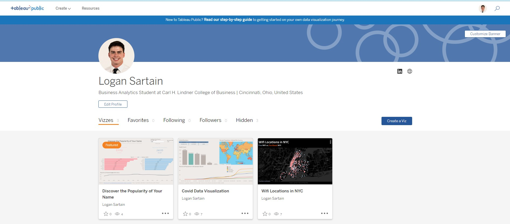
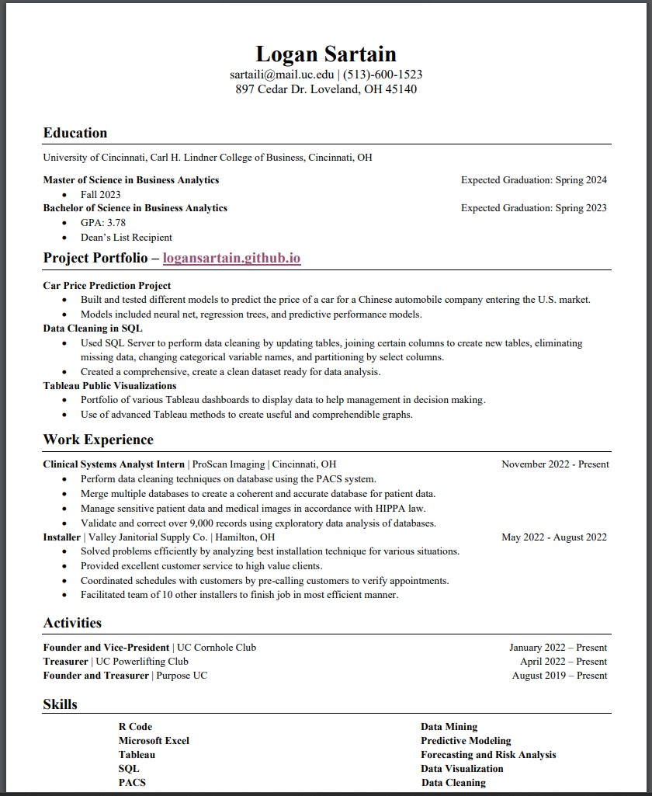

In this project, I used SQL Server to perform data cleaning on a Nashville Housing Dataset. This included updating tables, joining certain columns to create new tables, eliminating missing data, changing categorical variable names, partitioning by select columns, and much more. This was all done to create a clean dataset ready for data analysis.
For this project, I used SQL Server to perform data exploration on two large Covid-19 datasets, Covid Deaths and Covid Vaccinations. This includes functions such as Select, Groupby, and Orderby. I also merged the two different datasets using the Join function. This allowed the creation of many different views in order to gain knowledge on the two datasets.

This is my Tableau Public Profile. It contains various projects to visualize data in a manner that is both visually appealing and informative. I have created various dashboards that include features such as interactive filters, maps, different types of charts, and much more.
In this project, I am assisting a Chinese automobile company to enter new markets by building models to predict car prices. These include linear models, using different variable selection methods, and more advanced models like neural nets and regression trees. The highest performing model ended up being a neural net that I built.

Here I worked with Australian weather data in order to create an accurate forecast on the amount of rainfall in Sydney. To do so, I first implemented data wrangling techniques to prepare the data. I then created various TSLM, ETS, and ARIMA models to find the best model to predict rainfall. Lastly, I took my best model and fit it to the data to create an accurate forecast.

Here I used Excel to create two different interactive designs. The first is a Daily Caloric Intake Calculator. I used complex nested IF statements to create a formula based on current recommendations for calorie intake. The user will enter their information and then the formula will calculate the amount of calories they need depending on their goal of gaining, maintaining, or losing weight. The second design is an interactive performance plate which shows different proportions of food to eat based on needs.

In this project, I used Excel Solver to find solutions for two different problems subject to their various constraints. The first problem, was deciding on which design changes to implement on a car in order to minimize costs. The second problem, was figuring out the number of units to produce of each product in order to maximize profit.
